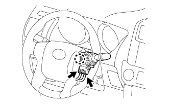

ВЫКЛЮЧАТЕЛЬ РАЗБЛОКИРОВКИ КЛЮЧА > СНЯТИЕ |
| 1. СНИМИТЕ НИЖНИЙ КОЖУХ РУЛЕВОЙ КОЛОНКИ |
Для моделей с наклонной телескопической рулевой колонкой с ручным приводом:
Снимите нижний кожух рулевой колонки (Нажмите здесь).
Для моделей с наклонной телескопической рулевой колонкой с электроприводом:
Снимите нижний кожух рулевой колонки (Нажмите здесь).
| 2. СНИМИТЕ ВЕРХНИЙ КОЖУХ РУЛЕВОЙ КОЛОНКИ |
Для моделей с наклонной телескопической рулевой колонкой с ручным приводом:
Снимите верхний кожух рулевой колонки (Нажмите здесь).
Для моделей с наклонной телескопической рулевой колонкой с электроприводом:
Снимите верхний кожух рулевой колонки (Нажмите здесь).
| 3. СНИМИТЕ ПЕРЕКЛЮЧАТЕЛЬ СТЕКЛООЧИСТИТЕЛЯ ВЕТРОВОГО СТЕКЛА В СБОРЕ |
 |
Для моделей с датчиком дождя:
Отсоедините разъем.
|  |
Для моделей без датчика дождя:
Отсоедините 2 разъема.
Освободите захват и снимите переключатель стеклоочистителя ветрового стекла.
| 4. СНИМИТЕ ВЫКЛЮЧАТЕЛЬ РАЗБЛОКИРОВКИ КЛЮЧА В СБОРЕ |
Отсоедините разъем выключателя разблокировки ключа.
Отцепите 3 захвата и снимите крышку.
Снимите колпачок штыря.
| *1 | Колпачок штыря |
 | Сдвиньте |
Снимите выключатель разблокировки ключа.